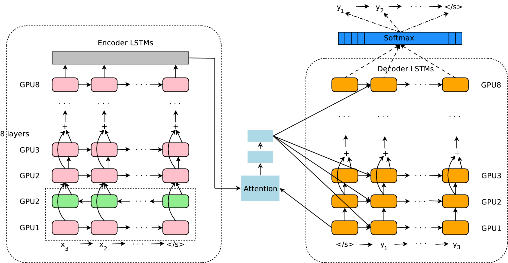

Google’s Neural Machine Translation System: Bridging the Gap between Human and Machine Translation
Yonghui Wu, Mike Schuster, Zhifeng Chen, Quoc V. Le, Mohammad Norouzi yonghui,schuster,zhifengc,qvl,mnorouzi@google.com
Wolfgang Macherey, Maxim Krikun, Yuan Cao, Qin Gao, Klaus Macherey, Jeff Klingner, Apurva Shah, Melvin Johnson, Xiaobing Liu, Łukasz Kaiser, Stephan Gouws, Yoshikiyo Kato, Taku Kudo, Hideto Kazawa, Keith Stevens, George Kurian, Nishant Patil, Wei Wang, Cliff Young, Jason Smith, Jason Riesa, Alex Rudnick, Oriol Vinyals, Greg Corrado, Macduff Hughes, Jeffrey DeanAbstract
Neural Machine Translation (NMT) is an end-to-end learning approach for automated translation, with the potential to overcome many of the weaknesses of conventional phrase-based translation systems. Unfortunately, NMT systems are known to be computationally expensive both in training and in translation inference – sometimes prohibitively so in the case of very large data sets and large models. Several authors have also charged that NMT systems lack robustness, particularly when input sentences contain rare words. These issues have hindered NMT’s use in practical deployments and services, where both accuracy and speed are essential. In this work, we present GNMT, Google’s Neural Machine Translation system, which attempts to address many of these issues. Our model consists of a deep LSTM network with 8 encoder and 8 decoder layers using residual connections as well as attention connections from the decoder network to the encoder. To improve parallelism and therefore decrease training time, our attention mechanism connects the bottom layer of the decoder to the top layer of the encoder. To accelerate the final translation speed, we employ low-precision arithmetic during inference computations. To improve handling of rare words, we divide words into a limited set of common sub-word units (“wordpieces”) for both input and output. This method provides a good balance between the flexibility of “character”-delimited models and the efficiency of “word”-delimited models, naturally handles translation of rare words, and ultimately improves the overall accuracy of the system. Our beam search technique employs a length-normalization procedure and uses a coverage penalty, which encourages generation of an output sentence that is most likely to cover all the words in the source sentence. To directly optimize the translation BLEU scores, we consider refining the models by using reinforcement learning, but we found that the improvement in the BLEU scores did not reflect in the human evaluation. On the WMT’14 English-to-French and English-to-German benchmarks, GNMT achieves competitive results to state-of-the-art. Using a human side-by-side evaluation on a set of isolated simple sentences, it reduces translation errors by an average of 60% compared to Google’s phrase-based production system.
Neural Machine Translation (NMT) [39, 2] has recently been introduced as a promising approach with the potential of addressing many shortcomings of traditional machine translation systems. The strength of NMT lies in its ability to learn directly, in an end-to-end fashion, the mapping from input text to associated output text. Its architecture typically consists of two recurrent neural networks (RNNs), one to consume the input text sequence and one to generate translated output text. NMT is often accompanied by an attention mechanism [2] which helps it cope effectively with long input sequences. An advantage of Neural Machine Translation is that it sidesteps many brittle design choices in traditional phrase-based machine translation [25]. In practice, however, NMT systems used to be worse in accuracy than phrase-based translation systems, especially when training on very large-scale datasets as used for the very best publicly available translation systems. Three inherent weaknesses of Neural Machine Translation are 1responsible for this gap: its slower training and inference speed, ineffectiveness in dealing with rare words, and sometimes failure to translate all words in the source sentence. Firstly, it generally takes a considerable amount of time and computational resources to train an NMT system on a large-scale translation dataset, thus slowing the rate of experimental turnaround time and innovation. For inference they are generally much slower than phrase-based systems due to the large number of parameters used. Secondly, NMT lacks robustness in translating rare words. Though this can be addressed in principle by training a “copy model” to mimic a traditional alignment model [30], or by using the attention mechanism to copy rare words [36], these approaches are both unreliable at scale, since the quality of the alignments varies across languages, and the latent alignments produced by the attention mechanism are unstable when the network is deep. Also, simple copying may not always be the best strategy to cope with rare words, for example when a transliteration is more appropriate. Finally, NMT systems sometimes produce output sentences that do not translate all parts of the input sentence – in other words, they fail to completely “cover” the input, which can result in surprising translations. This work presents the design and implementation of GNMT, a production NMT system at Google, that aims to provide solutions to the above problems. In our implementation, the recurrent networks are Long Short-Term Memory (LSTM) RNNs [22, 16]. Our LSTM RNNs have 8 layers, with residual connections between layers to encourage gradient flow [20]. For parallelism, we connect the attention from the bottom layer of the decoder network to the top layer of the encoder network. To improve inference time, we employ low-precision arithmetic for inference, which is further accelerated by special hardware (Google’s Tensor Processing Unit, or TPU). To effectively deal with rare words, we use sub-word units (also known as “wordpieces”) [34] for inputs and outputs in our system. Using wordpieces gives a good balance between the flexibility of single characters and the efficiency of full words for decoding, and also sidesteps the need for special treatment of unknown words. Our beam search technique includes a length normalization procedure to deal efficiently with the problem of comparing hypotheses of different lengths during decoding, and a coverage penalty to encourage the model to translate all of the provided input. Our implementation is robust, and performs well on a range of datasets across many pairs of languages without the need for language-specific adjustments. Using the same implementation, we are able to achieve results comparable to or better than previous state-of-the-art systems on standard benchmarks, while delivering great improvements over Google’s phrase-based production translation system. Specifically, on WMT’14 English-to-French, our single model scores 38.95 BLEU, an improvement of 7.5 BLEU from a single model without an external alignment model reported in [30] and an improvement of 1.2 BLEU from a single model without an external alignment model reported in [43]. Our single model is also comparable to a single model in [43], while not making use of any alignment model as being used in [43]. Likewise on WMT’14 English-to-German, our single model scores 24.17 BLEU, which is 3.4 BLEU better than a previous competitive baseline [6]. On production data, our implementation is even more effective. Human evaluations show that GNMT has reduced translation errors by 60% compared to our previous phrase-based system on many pairs of languages: English ↔ French, English ↔ Spanish, and English ↔ Chinese. Additional experiments suggest the quality of the resulting translation system gets closer to that of average human translators.
Statistical Machine Translation (SMT) has been the dominant translation paradigm for decades [3, 4, 5]. Practical implementations of SMT are generally phrase-based systems (PBMT) which translate sequences of words or phrases where the lengths may differ [25]. Even prior to the advent of direct Neural Machine Translation, neural networks have been used as a component within SMT systems with some success. Perhaps one of the most notable attempts involved the use of a joint language model to learn phrase representations [13] which yielded an impressive improvement when combined with phrase-based translation. This approach, however, still makes use of phrase-based translation systems at its core, and therefore inherits their shortcomings. Other proposed approaches for learning phrase representations [7] or learning end-to-end translation with neural networks [23] offered encouraging hints, but ultimately delivered worse overall accuracy compared to standard phrase-based systems. The concept of end-to-end learning for machine translation has been attempted in the past (e.g., [8]) with 2limited success. Following seminal papers in the area [39, 2], NMT translation quality has crept closer to the level of phrase-based translation systems for common research benchmarks. Perhaps the first successful attempt at surpassing phrase-based translation was described in [30]. On WMT’14 English-to-French, this system achieved a 0.5 BLEU improvement compared to a state-of-the-art phrase-based system. Since then, many novel techniques have been proposed to further improve NMT: using an attention mechanism to deal with rare words [36], a mechanism to model translation coverage [40], multi-task and semi-supervised training to incorporate more data [14, 28], a character decoder [9], a character encoder [11], subword units [37] also to deal with rare word outputs, different kinds of attention mechanisms [29], and sentence-level loss minimization [38, 33]. While the translation accuracy of these systems has been encouraging, systematic comparison with large scale, production quality phrase-based translation systems has been lacking.
